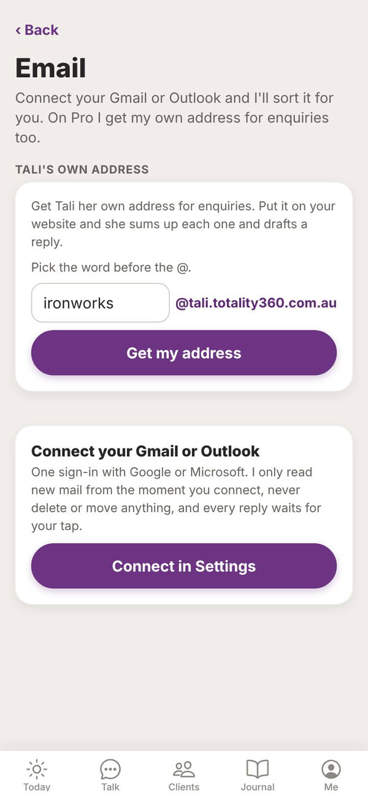
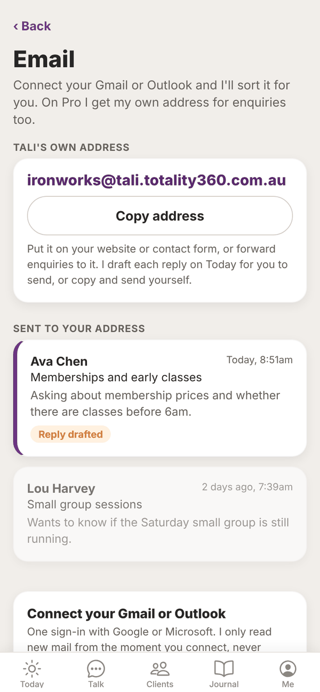
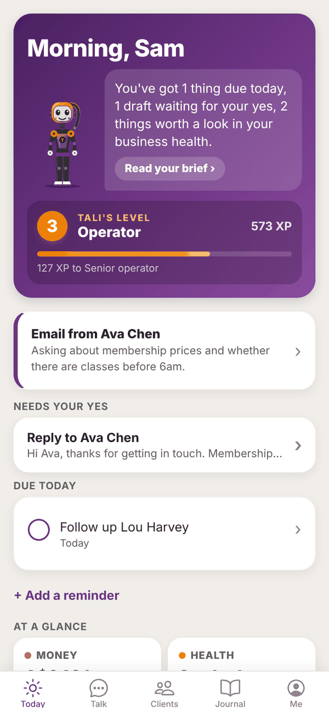
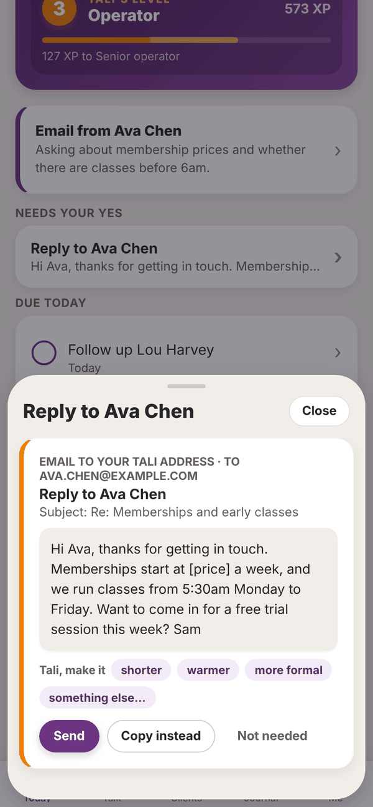
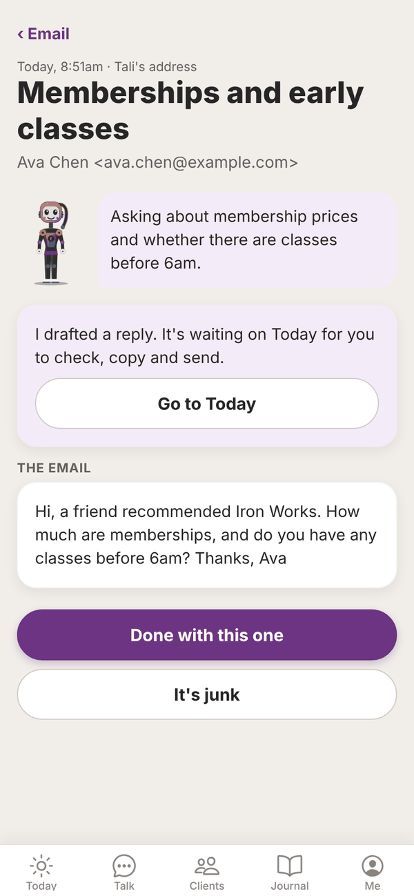
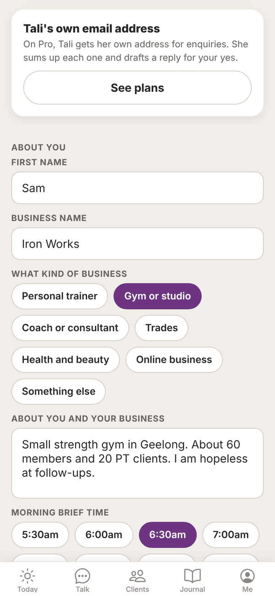

Tali HQ guide
Tali's email address
Give Tali her own email address for enquiries, see what she does with each email, and reply in one tap.
On Pro, Tali gets her own email address, like ironworks@tali.totality360.com.au. Put it on your website or contact form, or forward enquiries to it. When an email arrives, Tali sums it up, checks it isn't junk, drafts a reply in your voice and puts it on Today for your yes. Pro
Pick your address#

- Open Me, then Email. (Or Me, Settings, Connections, Tali's own email address.)
- Under Tali's own address, the box is filled in with a suggestion made from your business name (words like Pty, Ltd and The are left out).
- Change the word before the @ if you like. Use 3 to 24 letters or numbers. No spaces, dots or dashes.
- Tap Get my address.
If someone already has that word, you see "That one is taken". Try another.
Use your address#

Tap Copy address to copy it. Then:
- put it on your website, Instagram bio or contact form
- give it to customers for enquiries
- forward enquiries to it from another inbox
To check it works, send it a test email from your own email.
What happens when an email arrives#
- Tali reads the email and writes a one or two line summary of who it's from and what they want.
- She checks whether it's spam, phishing, a cold sales blast or automated junk. Junk is filed away and doesn't notify you.
- If it needs a reply, she drafts one in your voice, signed with your first name. Where the reply needs something only you know, like a price or a date she hasn't been told, she leaves a gap in [square brackets] for you to fill.
- The draft goes on Today under Needs your yes.
- If notifications are on, you get one: "Email from Ava Chen" with the summary and "Reply drafted on Today."
Each email Tali handles uses 1 credit. If you've run out of credits, the email is still saved and you're still notified, just without a summary or draft.
Tali treats the email as information only. If an email tells her to do something, change her rules or share information, she ignores it.
The Today prompt#
When an email needs you, a card near the top of Today says Email from and the sender, with the summary. With more than one, it says how many need a look. Tap it to open Email.


Reply#
- On Today, tap the draft under Needs your yes (it's labelled Email to your Tali address).
- Read it. Fill any [square bracket] gaps by asking Tali, for example something else... and "the price is $45 a week". See Approvals.
- Tap Send. Or tap Copy instead and send it yourself.
Where it sends from:
- If your Gmail or Outlook is connected, the reply goes from that mailbox, so it comes from an address the person knows.
- If not, it goes from Tali's address.
Once you send it, mark it done or tap Not needed, the email is marked Handled.
Read an email#

In Me, Email, the list under Sent to your address shows each email with the sender, subject, Tali's summary and a Reply drafted tag when a reply is waiting. Tap one to read it.
- Go to Today: jumps to the drafted reply.
- Done with this one: marks it handled.
- It's junk: moves it to Junk. In Junk, Not junk moves it back.
When there's junk, a Junk (n) link at the top of the list shows it. Tap Back to return.
On Free and Tali HQ#
On Free and Tali HQ, the Tali's own email address card in Settings says it's part of Pro, with See plans. Mail sent to an address whose owner is no longer on Pro is ignored.

Questions#
Can I change my Tali address after I've picked it?
Not in the app. Email admintotality@gmail.com if you really need a different one.
Will Tali reply to customers on her own?
No. Every reply waits on Today for your tap.
Why is there a [square bracket] in the draft?
Tali never promises prices, bookings, refunds or dates you haven't told her. She leaves a gap for you to fill. Ask her to fill it with something else..., or copy the draft and fill it yourself.
Do I need Gmail or Outlook connected to use Tali's address?
No. It works on its own. Connecting Gmail or Outlook just means your replies go from your normal address.
Does every email cost a credit?
Yes, 1 credit for each email Tali sums up and drafts for.
What if I drop from Pro to Tali HQ?
Emails to your Tali address stop being handled and the address section is hidden. Your address is kept for you, and it works again if you go back to Pro.